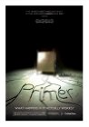
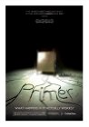
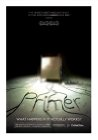

 that this was a vampire movie. So it seems weird that the movie was still what I expected, just with the addition of a vampire. Also the version I had turned out to be an English dub. The main characters were good, but the side characters seemed like unnatural dubs.")


 
